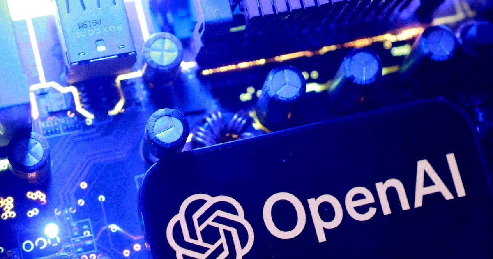
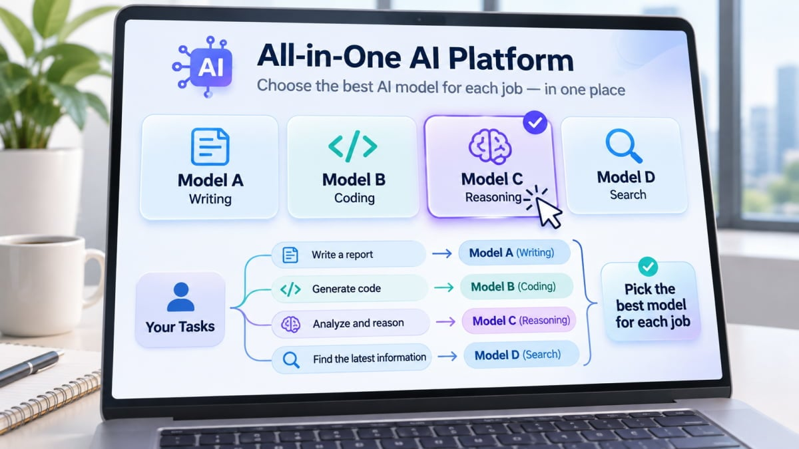

01 · GLOBAL
Claude Personal Finance
은행·카드 데이터를 질문형 지출 대시보드로
앤트로픽은 미국 Pro·Max·Ultra 사용자를 대상으로 계좌 연결 베타를 시작했다. Plaid를 통해 잔액·거래·청구서를 읽지만 접근은 읽기 전용이며 돈을 이동·관리·투자하지 않는다.
공식 원문 보기 ↗ADDIT INSIGHT
금융 AI는 답변보다 접근 범위와 근거를 함께 보여줄 때 신뢰를 얻는다.
클로드 개인재무·agent-desktop·국내 사용 확산·토큰 요금제·데이터센터와 추천 편향 사례로, AI가 실제 업무에 들어갈 때 필요한 권한·비용·검수 기준을 살펴봅니다.
오늘은 AI를 더 많이 쓰는 법보다, AI가 어디까지 움직여도 되는지와 그 결과를 어떻게 검수할지를 점검합니다.
클로드 개인재무·agent-desktop, 답변에서 권한 있는 실행으로
챗GPT 국내 MAU 1,876만·클로드 1년 새 15배 성장
구독보다 토큰·업무량 중심의 AI 비용 관리 부상
AI 데이터센터 유치, 전력·수익성·지역 수용성이 관건
추천 결과 반복 학습이 편향과 오류를 키울 수 있어
은행·카드 데이터를 질문형 지출 대시보드로
앤트로픽은 미국 Pro·Max·Ultra 사용자를 대상으로 계좌 연결 베타를 시작했다. Plaid를 통해 잔액·거래·청구서를 읽지만 접근은 읽기 전용이며 돈을 이동·관리·투자하지 않는다.
공식 원문 보기 ↗금융 AI는 답변보다 접근 범위와 근거를 함께 보여줄 때 신뢰를 얻는다.

모델 경쟁을 일상 사용량과 업무 체류시간으로
조선비즈는 지난달 챗GPT 국내 모바일 앱 MAU가 1,876만 2,276명으로 역대 최대였다고 보도했다. 클로드 이용자도 1년 새 15배 늘며 7위에서 2위로 상승했다.
원문 보기 ↗기업의 질문은 ‘도입할까’에서 ‘업무별 기본 AI를 무엇으로 둘까’로 바뀐다.

월정액보다 업무량에 맞춘 모델·비용 관리
한국경제는 KT가 73종 AI 모델을 통합하고 업무별 최적 모델을 자동 선택하는 토큰 요금제를 소개했다고 보도했다. 기사에는 비용을 최대 25% 낮추는 구조가 제시됐다.
원문 보기 ↗AI 예산은 좌석 수가 아니라 호출량·토큰·재시도 비용까지 관리해야 한다.

해외 규제 변화를 국내 인프라 조건으로 검증
경향신문은 미국 건설 규제 강화가 한국·일본의 해외 거점 유치 기회가 될 수 있다고 분석했다. 동시에 전력·용수·지역사회 부담과 장기 고객·수익성 검증이 필요하다고 짚었다.
원문 보기 ↗데이터센터 사업계획서 첫 장에는 전력·물·지역 보상·앵커 고객이 있어야 한다.
추천 결과를 다시 학습할 때 생기는 편향 추적
UNIST 연구팀은 LLM 추천 시스템의 편향·오류를 추적하는 EchoTrace를 개발했다. 실험에서는 목록 밖 추천과 인기 항목 편중이 확인됐고 반복 학습 뒤에도 초기 편향이 남았다.
원문 보기 ↗추천 KPI에 클릭률만 넣지 말고 신규성·다양성·오류율·반복 편향을 함께 넣자.